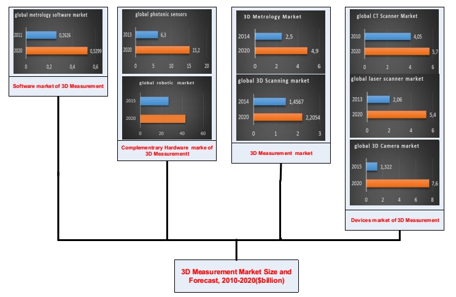

This is a university projects of University of Potsdam and Technische Universität Berlin. In collaboration with Siemens AG and aims at providing insights and future scenarios for the technology – 3D measurement of large components. In order to be able to deliver the assigned goals, our team encompassing 4 students from TU Berlin and Uni Potsdam was formed. It was a hard but cool project. I am very glad that I am a member of this team.
In order to prepare a proper report the research was divided. All members studied literature and websites of organizations related to the investigated technology. These actions facilitated a preparation for the first interview with a representative of Siemens AG. Having gathered basic information about the different technologies concerning 3D measurement, as well as applications and market players from both literatures and the interview, it turned out that the research should con-centrate more on certain 3D measurement methods such as laser triangulation, structured light, photogrammetry and CT. Additionally, the research should focus on large components which is defined here as an object larger than 2 meters height and a diameter of 1 meter. After the first research, a first discussion about key drivers took place. On the basis of the findings, 5 key drivers out of 21 were derived with the help of the software EIDOS.
Cooperation and Interview with Siemens, GOM, AICON etc.Subsequently, appropriate companies related to the 3D measurement market were searched. We managed to get in contact with 3D measurement experts from 7 different companies:
- manufacturers: GOM, AICON, Zeiss; - research institutions: Measurement in Motion, TU Berlin 3D Lab; - 3D measurement service providers: Schenk&Steindorf GbR, ARGON MS GmbH.
Six telephone interviews were conducted and one interview was delivered through email. The interviews result-ed in perceiving technology drivers in a slightly different approach than it was expected. Therefore, some of the key drivers were needed to be reformulated. Having made a decision about changing two drivers, the interviews with GOM and AICON were conducted. These conversations in fact supported the final set of key drivers. Furthermore, in order to find consistent scenarios, a matrix analysis in EIDOS was conducted According to three established scenarios, strategic recommenda-tions were formed.
For scientific insights regarding the 3D measurement technology and for the identification of recent research findings, Google Scholar, Science Direct, Springer Link and Web of Science were used. The information concerning the market players were gathered mostly from websites and reports of the players as well as overviews to reports about 3D scanning and 3D measurement. The expert inter-views helped in defining the key drivers as well as future capabilities of this technology.